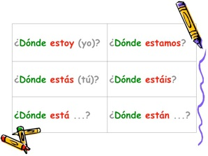
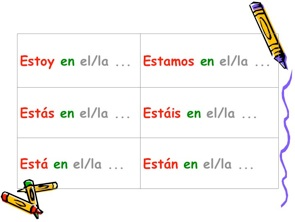

キャンパスの中 en el recinto
> • 「誰それはどこ？」という表現と一緒に、キャンパスの中の場所の言い方を覚えよう。 • 「誰それはどこ？」の「どこ？」は ¿Dónde ...? • 「どこにいるの？」の「いる」は、動詞 ”estar” を使います。 • 答える時の「〜にいる」の「〜に」は前置詞 “en” です。 • 答える時は、既知の場所を言うわけですから、場所の名前に定冠詞をつけます。 キャンパスの中 en el recinto

